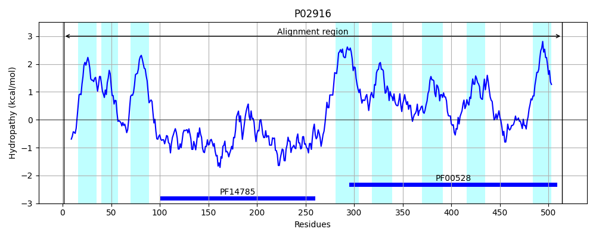
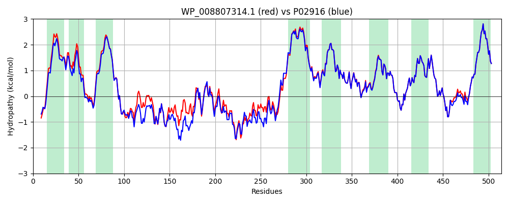

Hit Accession: P02916
Hit TCID: 3.A.1.1.1
Hit Description: gnl|BL_ORD_ID|8231 gnl|TC-DB|P02916|3.A.1.1.1 Maltose transport system permease protein malF - Escherichia coli.
Mach Len: 514
e:0.000000
Query TMS Count : 8
Hit TMS Count: 8
TMS-Overlap Score: 8.350000
Predicted Substrates:CHEBI:17593;maltooligosaccharide, CHEBI:6668;maltose
BLAST Alignment:
Score: 2414 , Bit scores: 934 bits, E-value: 0.0e+00, Alignment length: 514, Percentage identity: 89
Query: 1 MDAVKKKHWWQSPQLTWSVIGLLCLLVGYLVVLMYAQGEYLFAIMTLILSSVGLYIFANRKAYAWRYVYPGLAGMGLFVLFPLICTIAIAFTNYSSTNQLTFERAQQVLMDRSFQAGKAYNFTLIPAGDEWKLALTDGESGKNYLSDAFKFGGEQKLALKETDALPEGERVSLRVITQNRTALNQLTAVLPDDSKVIMSSLRQFSGTQPLYTLSEDGVLTNNQTHVKYRPNNDVGFYQAINADGSWGTEKLSPGYTVTIGWDNFTRVFQDEGIQKPFFAIFVWTVVFSVLTVILTVAVGMVLACLVQWEALKGKAIYRVLLILPYAVPSFISILIFKGLFNQSFGEINMMLSALFGIKPAWFSDPTTARTMIIIVNTWLGYPYMMILCMGLLKAIPDDLYEASAMDGAGPFQNFFKITLPLLIKPLTPLMIASFAFNFNNFVLIQLLTNGGPDRLGTTTPAGYTDLLVSYTYRIAFEGGGGQDFGLAAAIATLIFLLVGALAIVNLKATRMKFD 514
MD +KKKHWWQS L WSV+GLL LLVGYLVVLMYAQGEYLFAI TLILSS GLYIFANRKAYAWRYVYPG+AGMGLFVLFPL+CTIAIAFTNYSSTNQLTFERAQ+VL+DRS+QAGK YNF L PAGDEW+LAL+DGE+GKNYLSDAFKFGGEQKL LKET A PEGER +LRVITQNR AL+ +TA+LPD +KV+MSSLRQFSGTQPLYTL DG LTNNQ+ VKYRPNN +GFYQ+I ADG+WG EKLSPGYTVT GW NFTRVF DEGIQKPF AIFVWTVVFS++TV LTVAVGMVLACLVQWEAL+GKA+YRVLLILPYAVPSFISILIFKGLFNQSFGEINMMLSALFG+KPAWFSDPTTARTM+IIVNTWLGYPYMMILCMGLLKAIPDDLYEASAMDGAGPFQNFFKITLPLLIKPLTPLMIASFAFNFNNFVLIQLLTNGGPDRLGTTTPAGYTDLLV+YTYRIAFEGGGGQDFGLAAAIATLIFLLVGALAIVNLKATRMKFD
Sbjct: 1 MDVIKKKHWWQSDALKWSVLGLLGLLVGYLVVLMYAQGEYLFAITTLILSSAGLYIFANRKAYAWRYVYPGMAGMGLFVLFPLVCTIAIAFTNYSSTNQLTFERAQEVLLDRSWQAGKTYNFGLYPAGDEWQLALSDGETGKNYLSDAFKFGGEQKLQLKETTAQPEGERANLRVITQNRQALSDITAILPDGNKVMMSSLRQFSGTQPLYTLDGDGTLTNNQSGVKYRPNNQIGFYQSITADGNWGDEKLSPGYTVTTGWKNFTRVFTDEGIQKPFLAIFVWTVVFSLITVFLTVAVGMVLACLVQWEALRGKAVYRVLLILPYAVPSFISILIFKGLFNQSFGEINMMLSALFGVKPAWFSDPTTARTMLIIVNTWLGYPYMMILCMGLLKAIPDDLYEASAMDGAGPFQNFFKITLPLLIKPLTPLMIASFAFNFNNFVLIQLLTNGGPDRLGTTTPAGYTDLLVNYTYRIAFEGGGGQDFGLAAAIATLIFLLVGALAIVNLKATRMKFD 514 | Protein Hydropathy Plots: |
|---|
 |  |
Pairwise Alignment-Hydropathy Plot:
|
|---|
|  |